2025-10-19 17:45 EDT
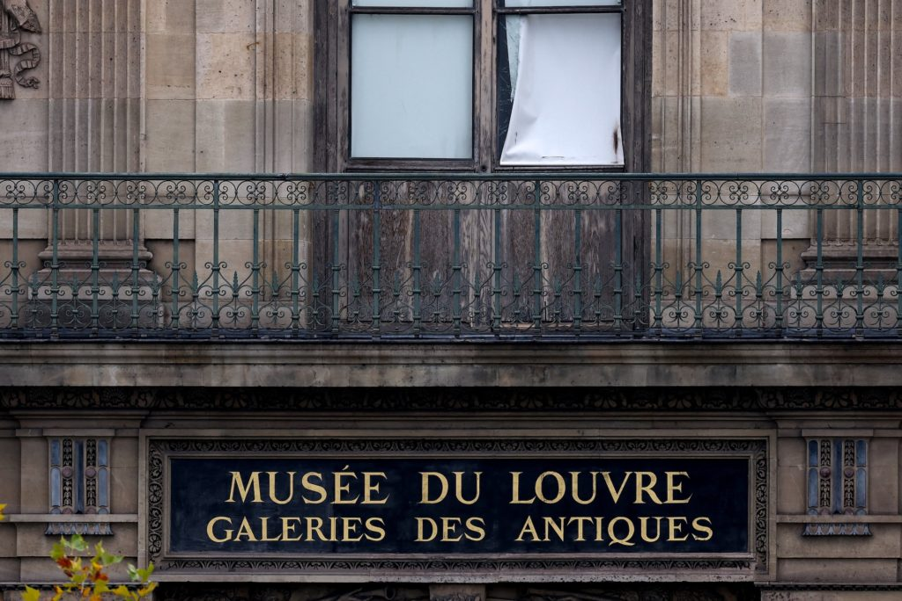
In our news wrap Sunday, a brazen daytime robbery took place at the Louvre Museum, Trump called Colombia's president an "illegal drug leader" and said he is cutting U.S. aid to the country, and London police said they are investigating allegations that Prince Andrew asked a former bodyguard to dig up damaging information about the woman who accused him of sexual assault.
2025-10-19 17:40 EDT
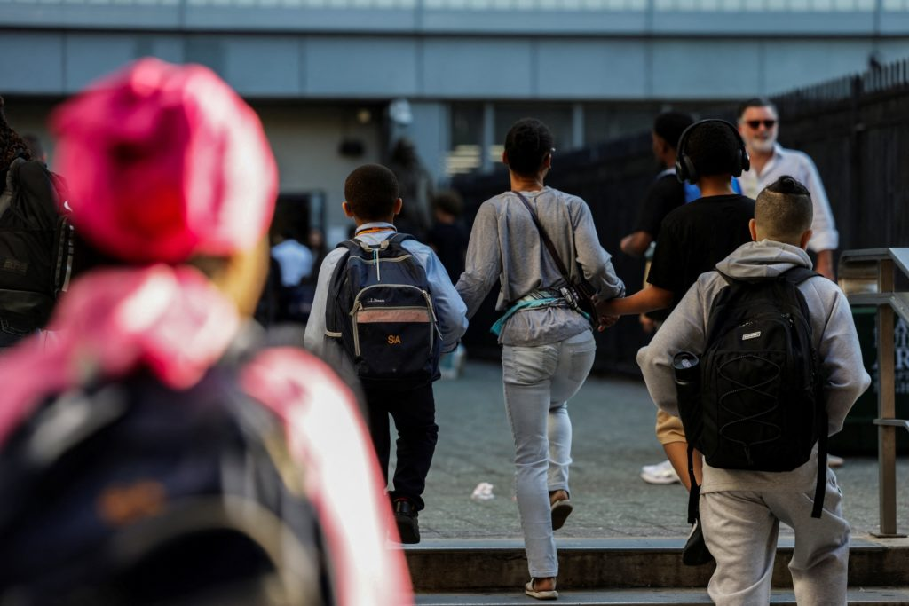
John Yang John Yang
Claire Mufson Claire Mufson
Zoie Lambert Zoie Lambert
Laine Immell Laine Immell
In March, Trump signed an executive order to begin shutting down the Department of Education, though it would take an act of Congress to actually close it. In the meantime, the department is taking dramatic steps toward fulfilling a conservative vision of a reshaped primary and secondary education system. John Yang speaks with ProPublica investigative reporter Jennifer Smith Richards for more.
John Yang John Yang
John Yang is the anchor of PBS News Weekend and a correspondent for the PBS News Hour. He covered the first year of the Trump administration and is currently reporting on major national issues from Washington, DC, and across the country.
Claire Mufson Claire Mufson
Claire Mufson is a journalist and general assignment producer at PBS News Weekend. She produces stories on a wide range of topics including breaking news, health care, culture, disability and the environment. Before joining PBS News, she worked in Paris for French public broadcasting channel France 24 and for The New York Times.
Zoie Lambert Zoie Lambert
Zoie Lambert is a production assistant for PBS News Weekend.
Laine Immell Laine Immell
2025-10-19 17:35 EDT
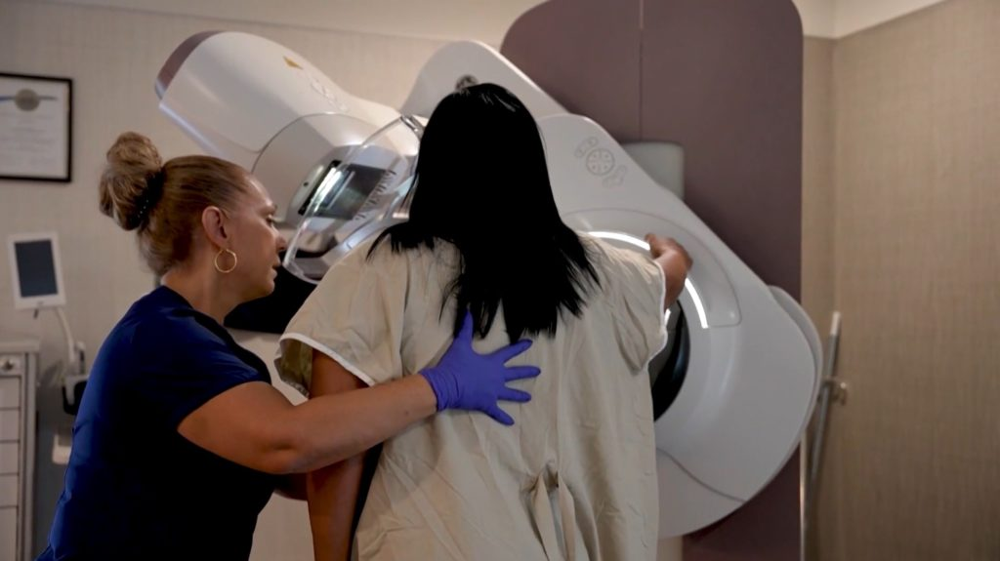
Ali Rogin Ali Rogin
Kaisha Young Kaisha Young
The end of breast cancer treatment is cause for celebration, but for many patients, it can bring new challenges. Some studies show that up to 65% of women who undergo breast cancer surgery develop lymphedema, a painful swelling of tissue due to excess fluid retention. Ali Rogin spoke with two members of the nonprofit Lymphedema Education & Research Network to learn more.
Ali Rogin Ali Rogin
Ali Rogin is a correspondent for the PBS News Hour and PBS News Weekend, reporting on a number of topics including foreign affairs, health care and arts and culture. She received a Peabody Award in 2021 for her work on News Hour's series on the COVID-19 pandemic's effect worldwide. Rogin is also the recipient of two Edward R. Murrow Awards from the Radio Television Digital News Association and has been a part of several teams nominated for an Emmy, including for her work covering the fall of ISIS in 2020, the Las Vegas mass shooting in 2017, the inauguration of President Barack Obama in 2014, and the 2010 midterm elections.
Kaisha Young Kaisha Young
Kaisha Young is a general assignment producer at PBS News Weekend.
2025-10-19 17:30 EDT
William Brangham William Brangham
Lorna Baldwin Lorna Baldwin
Wildflowers are blooming in the Atacama Desert, an inhospitable stretch of land west of the Andes Mountains that normally gets just 2 millimeters of rain every year. But this July and August, a rare alignment of conditions led to a beautiful, fleeting burst of color that has drawn tourists and scientists alike. William Brangham reports.
William Brangham William Brangham
William Brangham is an award-winning correspondent, producer, and substitute anchor for the PBS News Hour.
Lorna Baldwin Lorna Baldwin
Lorna Baldwin is an Emmy and Peabody award winning producer at the PBS NewsHour. In her two decades at the NewsHour, Baldwin has crisscrossed the US reporting on issues ranging from the water crisis in Flint, Michigan to tsunami preparedness in the Pacific Northwest to the politics of poverty on the campaign trail in North Carolina. Farther afield, Baldwin reported on the problem of sea turtle nest poaching in Costa Rica, the distinctive architecture of Rotterdam, the Netherlands and world renowned landscape artist, Piet Oudolf.
2025-10-19 15:27 EDT
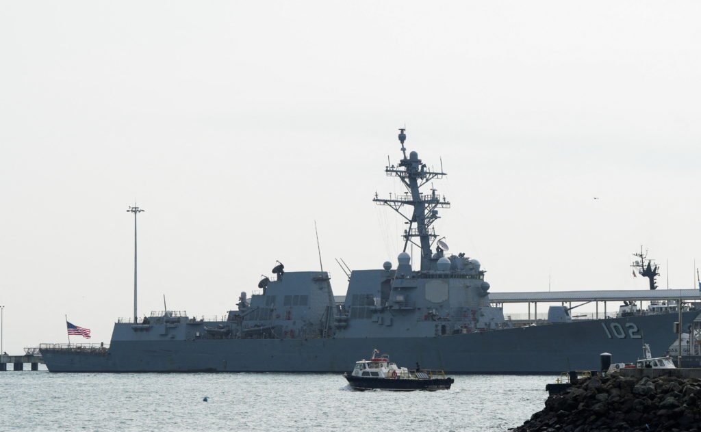
President Donald Trump said U.S. military strikes on five Venezuelan boats have saved more than 100,000 lives because the maneuvers thwarted drug smuggling. Several aspects of Trump's statement make it wrong.
Maria Ramirez Uribe, PolitiFact Maria Ramirez Uribe, PolitiFact
This article originally appeared on PolitiFact.
President Donald Trump said U.S. military strikes on five Venezuelan boats have saved more than 100,000 lives because the maneuvers thwarted drug smuggling.
"Every boat that we knock out we save 25,000 American lives so every time you see a boat and you feel badly you say, 'Wow, that's rough;' It is rough, but if you lose three people and save 25,000 people," Trump said in an Oct. 15 press conference.
The administration did not supply PolitiFact with evidence that the boats were carrying drugs. Drug experts told PolitiFact that Venezuela plays a minor role in trafficking drugs that reach the U.S. The legality of the strikes also is unclear. After the first attack, some legal experts told PolitiFact that the military action was illegal under maritime law or human rights conventions and the attack contradicted longstanding U.S. military practices.
Trump has used the figure repeatedly and also says he would consider similar strikes on land.
"Every one of those boats is responsible for the death of 25,000 American people, and the destruction of families," Trump said in an Oct. 5 speech to U.S. Navy sailors. "So when you think of it that way, what we're doing is actually an act of kindness."
"We've taken a very hard stand on drugs ... the water drugs - the drugs that come in through water they're not coming - there are no boats anymore, frankly there are no fishing boats, there's no boats out there period," Trump told Canadian Prime Minister Mark Carney on Oct. 7. "We've probably saved at least 100,000 lives, American lives, Canadian lives, by taking out those boats."
Several aspects of Trump's statement make it wrong.
There is no way of knowing how many lives are saved as a result of drug interception efforts, drug experts have told PolitiFact.
Additionally, if Trump's statement were accurate, the strikes on five boats in less than two months would have saved nearly double the number of U.S. lives lost to drug overdoses in an entire year.
The Trump administration hasn't specified what type of drug or what quantity was on the boats that were struck. So it's impossible to calculate how many deadly doses could have been destroyed.
Trump said the boats were carrying fentanyl during the Oct. 15 press conference.
"And you can see it, the boats get hit, and you see that fentanyl all over the ocean," Trump said. "It's like floating in bags. It's all over the place."
He has shared aerial videos of some of the boat strikes on Truth Social, and no bags of drugs are visible in the videos.
Additionally, most illicit fentanyl in the U.S. comes from Mexico, not Venezuela. It enters the U.S. mainly through the southern border at official ports of entry, and it's smuggled in mostly by U.S. citizens, according to the U.S. Sentencing Commission.
If the boats each carried 25,000 lethal doses, that doesn't mean the strikes stopped 125,000 people from dying of a drug overdose.
"When drugs are seized, the supply chain partially replaces those lost drugs," Jonathan Caulkins, a Carnegie Mellon University drug policy researcher, previously told PolitiFact.
Overdose drug deaths have been declining for the past couple of years, before there were any strikes on boats off the coast of Venezuela, according to provisional data from the Centers for Disease Control and Prevention.
The CDC reported more than 73,000 drug overdose deaths from May 2024 to April 2025. For Trump's statement to be accurate, the drugs on five boats would have been responsible for 125,000 deaths, nearly double the number of overdose deaths in one year.
Trump isn't the first person to equate drug enforcement with saving lives. Over the years, we've fact-checked other politicians when they said that a quantity of drugs seized at the U.S. border was enough to kill a specific number of people, or that those seizures saved a specific number of lives.
Generally, the politicians we have fact-checked referred to fentanyl seizures. The synthetic opioid is the leading cause of U.S. overdose deaths. Politicians' statements about lives saved rely on the lethal dose for fentanyl - 2 milligrams. So if authorities seized 10 milligrams of fentanyl, for example, that saved five lives, politicians say.
But there are caveats to that calculation because a dose's lethality can vary based on a person's height, weight and tolerance from past exposure, drug experts say. And statistics about how many drugs were stopped from entering the U.S. don't account for how many drugs make it into the country.
"We don't have any method I'm aware of for translating drug seizure data into any measure of overdose deaths averted," Alene Kennedy-Hendricks, a Johns Hopkins University health policy expert, told PolitiFact in May.
Regarding boat strikes off the coast of Venezuela, Trump said, "Every boat that we knock out we save 25,000 American lives."
Trump said the five boats the U.S. military has struck off the coast of Venezuela were carrying drugs heading to the U.S. However, experts on drugs and Venezuela told PolitiFact the country plays a minor role in trafficking drugs that reach the U.S.
The administration has provided no evidence about the type or quantity of drugs it says were on the boats. This lack of information makes it impossible to know how many lethal doses of the drugs could have been destroyed.
Even if the boats were carrying 25,000 lethal drug doses each, that doesn't mean that destroying them saved 125,000 lives. There were 73,000 U.S. drug overdose deaths from May 2024 to April 2025. That means the drugs on five boats would have been responsible for 125,000 deaths, nearly double the number of U.S. overdose deaths in one year.
The amount of drugs that are stopped from entering the U.S. doesn't indicate how many lives were saved.
We rate Trump's statement Pants on Fire!
Maria Ramirez Uribe, PolitiFact Maria Ramirez Uribe, PolitiFact
2025-10-19 13:46 EDT
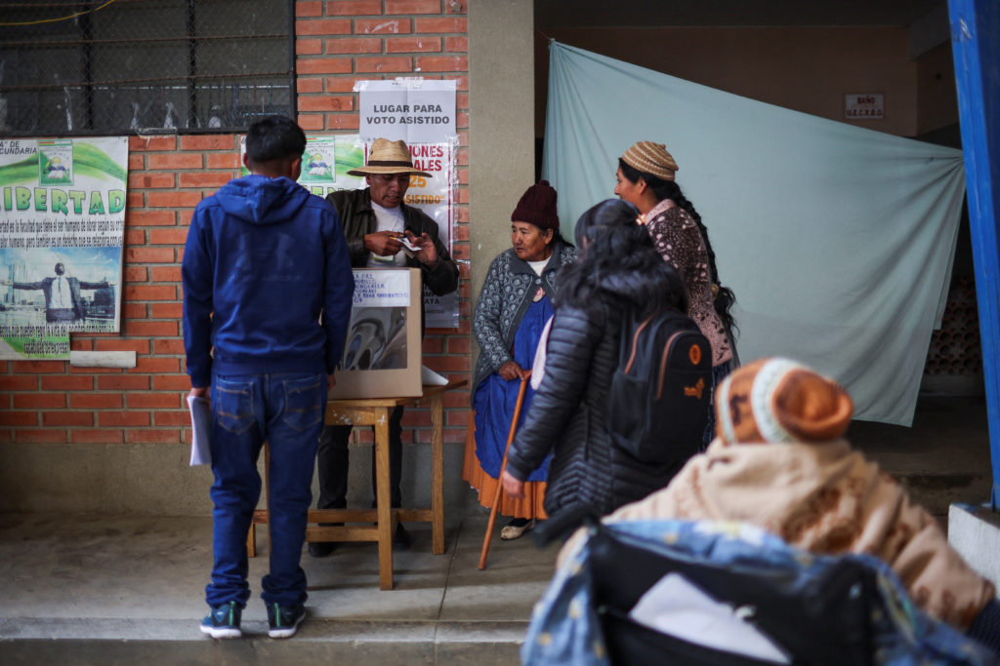
Isabel DeBre, Associated Press Isabel DeBre, Associated Press
LA PAZ, Bolivia (AP) - Bolivians voted on Sunday in an unprecedented presidential runoff between two conservative, capitalist candidates, ushering in a new political era after almost 20 years of one-party rule by the Movement Toward Socialism party.
Voters are choosing between former right-wing President Jorge "Tuto" Quiroga and centrist Sen. Rodrigo Paz as they look for a leader to lift them out of their country's worst economic crisis in decades.
Since 2023, the Andean nation has been crippled by a shortage of U.S. dollars that has locked Bolivians out of their own savings and hampered imports. Year-on-year inflation soared to 23% last month, the highest rate since 1991. Fuel shortages paralyze the country.
Quiroga and Paz have vowed to break with the budget-busting populism that dominated Bolivia under the Movement Toward Socialism, or MAS, party founded by Evo Morales, a charismatic coca growers' union leader who became Bolivia's first Indigenous president in 2006.
"We are living in a time of change and renewal," Paz told supporters as he cast his ballot in his hometown of Tarija, alongside his father, former President Jaime Paz Zamora. "We are closing one cycle and opening another."
The promise of change has energized some voters.
"Since 2005 we haven't had any real options, so this is exciting for me," said high school teacher Carlos Flores, 41, who was waiting to vote for Paz.
Riven by internal divisions and battered by public anger over fuel lines, MAS suffered a historic defeat in the Aug. 17 elections that propelled Quiroga and Paz to the dead-heat runoff. Paz beat Quiroga but without enough votes to avoid a second round.
Both candidates have promised to end Bolivia's fixed exchange rate, restructure state-owned companies and lure foreign investment. Among the factors that most distinguish them is how far and fast they propose pushing their reforms.
Quiroga wants to get dollars flowing into Bolivia immediately with a big rescue package from the International Monetary Fund and other multilateral lenders.
That would demand savage cuts in state spending, such as slashing fuel subsidies, shrinking the public payroll and cutting the state out of Bolivia's gas and mining businesses. He has run for president three times before but never made it this far.
"What's interesting is that even though Quiroga puts very drastic measures on the table, he has considerable support," said Gustavo Flores-Macías, dean of the School of Public Policy at the University of Maryland. "It shows that a good share of Bolivians are just so tired of the crisis, the currency difficulties, the fuel shortages, that they're willing to support someone who says there will be pain before things get better."
Paz favors a more cautious approach. He says he'll phase out fuel subsidies gradually and provide MAS-style social protections like cash handouts to cushion the blow.
Shunning the IMF - an organization viewed with contempt in Bolivia during the nearly two decades of left-wing rule - Paz promises to scrape together dollars by legalizing Bolivia's black market and fighting corruption.
Although Paz has spent more than two decades in politics as a lawmaker and mayor, he emerged as something of a political unknown in the August vote.
His popularity, experts say, was further buoyed by the outsider status of his running mate, ex-police Capt. Edman Lara, who was fired from the force in 2023 for denouncing corruption in viral TikTok videos that drew a huge following. Many are former MAS supporters who appreciated the party's egalitarian ethos, but soured on its taxes and regulation.
The pair mounted a fast-paced underdog campaign, crisscrossing cities and rural communities to throw beer-soaked, no-frills events with the message of "capitalism for all."
They played up their contrast with the wealthy Quiroga and his large campaign war chest, portraying their rival as part of Bolivia's elite political establishment. Quiroga briefly served as president from 2001-2002, after his predecessor Hugo Banzer fell ill and stepped down.
"The socioeconomic backgrounds of the leadership and, ultimately, of the voters, are very different. There's a divide between those with greater economic access and those with less," said Verónica Rocha, a Bolivian political analyst.
Quiroga appeals more to the industrialists and business leaders in the crucial agriculture sector, and Paz to the merchants, micro-entrepreneurs and self-employed, she said.
The next president faces a task that's about as simple as running a marathon in Bolivia's highlands - altitude: 4,150 meters (13,600 feet).
In the heady early days of Morales' long tenure (2006-2019), a boom in natural gas exports underwrote the state's unbridled spending. Now, gas exploration and production has collapsed. But Bolivia continues to splurge to keep fuel practically free, paying $2 billion last year on the subsidies.
Previous attempts to lift the subsidies didn't go well: Morales' bid to lift fuel subsidies in 2011 lasted less than a week as mass protests engulfed the country.
Public transportation unions have already threatened to ignite unrest if fuel subsidies are eliminated.
Widespread disillusionment over the scope of the crisis has led many Bolivians to believe that all politicians have failed them and left around 10% of voters undecided, according to recent polls.
"Every candidate promises and promises, but when they get to power, they forget about the people," said Javier Quisbert, 40, who emerged from a polling station Sunday saying that he spoiled his ballot just to avoid a punitive fine. Voting is compulsory for Bolivia's nearly 8 million eligible voters.
"There's no life anymore in Bolivia," Quisbert said.
Whoever wins, the end of MAS after around 20 years of hegemony will trigger a major economic and geopolitical realignment that could reverberate across the continent. The candidates say they'll welcome foreign investment and encourage private enterprise in Bolivia, which has the world's greatest lithium resources.
The election also means a shift away from Bolivia's current allies, China and Russia, and toward the United States, after decades of anti-American hostility. Both Quiroga and Paz flew to Washington to meet with IMF and Trump administration officials.
"Both candidates running in the runoff election want strong and better relations with the United States, so that's another transformative opportunity," U.S. Secretary of State Marco Rubio said at a news conference Tuesday as U.S. President Donald Trump welcomed Argentine President Javier Milei, a close ally, to the White House.
"Like Bolivia, there are numerous other countries coming our way," Trump said.
Isabel DeBre, Associated Press Isabel DeBre, Associated Press
2025-10-19 12:20 EDT
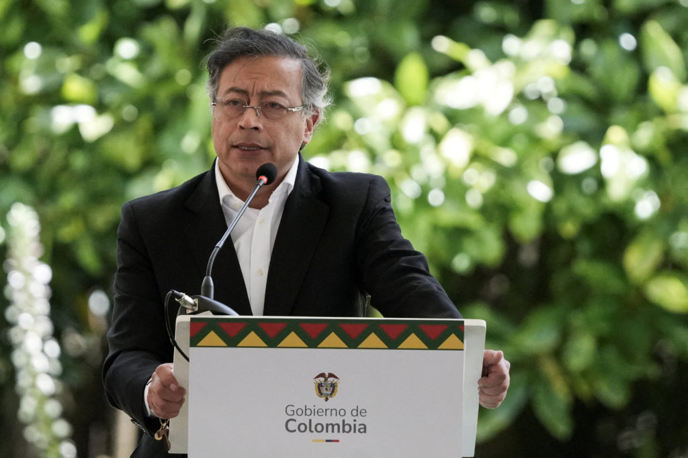
Chris Megerian, Associated Press Chris Megerian, Associated Press
Dánica Coto, Associated Press Dánica Coto, Associated Press
CORRECTION: The Associated Press updated this story to reflect that Trump called Petro "an illegal drug leader," not "an illegal drug dealer."
PALM BEACH, Fla. (AP) - The United States will slash assistance to Colombia because its leader, Gustavo Petro, "does nothing to stop" drug production, President Donald Trump said Sunday, escalating the friction between Washington and one of its closest allies in Latin America.
In a social media post, Trump referred to Petro as "an illegal drug leader" who is "low rated and very unpopular." The Republican president warned that Petro "better close up" drug operations "or the United States will close them up for him, and it won't be done nicely."
Hours later, Defense Secretary Pete Hegseth announced the latest U.S. strike on a vessel that was allegedly carrying "substantial amounts of narcotics."
He said the vessel was associated with a Colombian rebel group - the National Liberation Army, or ELN - that has been in conflict with Petro's government. He did not provide any evidence for his assertions, but he shared a brief video clip of a boat engulfed in flames after an explosion on Friday.
Petro, who can be as vocal on social media as his American counterpart, rejected Trump's accusations and defended his work to fight narcotics in Colombia, the world's largest exporter of cocaine.
"Trying to promote peace in Colombia is not being a drug trafficker," Petro wrote. He suggested that Trump was being deceived by his advisers, described himself as "the main enemy" of drugs in his country and said Trump was being "rude and ignorant toward Colombia."
The Colombian Foreign Ministry described Trump's statement as a "direct threat to national sovereignty by proposing an illegal intervention in Colombian territory." Defense Minister Pedro Sánchez told reporters that the country "has used all its capability and also lost men and women fighting drug trafficking."
Trump's latest broadside against Petro raises the possibility of an expanding clash in Latin America, where the U.S. has already increased pressure on neighboring Venezuela and its leader, Nicolás Maduro.
American naval ships, fighter jets and drones are deployed in the region for what the administration has described as an "armed conflict" with drug cartels. Trump also authorized covert operations inside Venezuela.
Unlike Venezuela, Colombia is a longtime U.S. ally and the top recipient of American assistance in the region. But coca cultivation reached an all-time high last year, according to the United Nations, and there has been fresh violence in rural areas where the government spent years battling insurgents before reaching a peace deal a decade ago.
In September, the Trump administration accused Colombia of failing to cooperate in the drug war, although at the time Washington issued a waiver of sanctions that would have triggered aid cuts.
Colombia received an estimated $230 million in the U.S. budget year that ended Sept. 30, a drop from recent years that exceeded $700 million, according to U.S. figures.
Petro, Colombia's first leftist president, has repeatedly feuded with Trump this year. Petro initially rejected U.S. military flights of deported migrants, leading Trump to threaten tariffs. The State Department said it would revoke Petro's when he attended the U.N. General Assembly in New York because he told American soldiers to disobey Trump's orders.
Petro and Trump have also been at odds over American strikes on boats in the Caribbean. On Sunday, Petro accused the U.S. government of assassination, pointing to a Sept. 16 strike that he said killed a Colombian man named Alejandro Carranza. Petro said Carranza was a fisherman with no ties to drug trafficking, and his boat was malfunctioning when it was hit.
"The United States has invaded our national territory, fired a missile to kill a humble fisherman, and destroyed his family, his children. This is Bolívar's homeland, and they are murdering his children with bombs," Petro wrote on social media. He said that he asked his country's attorney general's office to initiate legal proceedings internationally and in U.S. courts.
The White House and the Pentagon did not immediately respond to requests for comment on Petro's accusations.
Despite Petro's criticism, his government plans to prosecute the Colombian survivor of a more recent U.S. strike on a submersible that was allegedly carrying drugs.
Another survivor was repatriated to Ecuador, where the Ministry of the Interior said he would not face charges after prosecutors met with him and determined that he had not committed any crimes within the country's borders.
The ELN, which Hegseth said was the target of Friday's strike, has long denied any role in drug trafficking and offered to submit to the scrutiny of an international commission. It did not respond to Hegseth's announcement. Colombian authorities regularly report the dismantling of cocaine laboratories and the seizure of drugs believed to belong to the guerrillas.
There have been seven U.S. strikes in the region since early September that the administration says are targeting alleged drug traffickers. At least 32 people have been killed.
Trump said Sunday that Petro had "a fresh mouth toward America." He complained that drug smuggling continues "despite large scale payments and subsidies from the USA that are nothing more than a long term rip off of America."
"AS OF TODAY, THESE PAYMENTS, OR ANY OTHER FORM OF PAYMENT, OR SUBSIDIES, WILL NO LONGER BE MADE TO COLOMBIA," he added.
Elizabeth Dickinson, senior analyst for the Andes region at International Crisis Group, said "it is befuddling and profoundly unwise of the United States to alienate its strongest military partner in Latin America at a moment when tension between Washington and Venezuela are at its highest point in recent years."
She said Washington and Bogota have long treated their relationship as foundational, but "that wisdom is being thrown out the window, with really catastrophic effects."
Colombia lost significant U.S. funding when Trump slashed the U.S. Agency for International Development earlier this year. More cuts could affect military cooperation and undermine efforts to fight rebel groups.
"If that is cut, we will see a strategic loss of capability for the Colombian military and police at precisely the moment when they're confronting the greatest security crisis in Colombia for over a decade," she said.
Coto reported from San Juan, Puerto Rico, and Suárez from Bogotá, Colombia.
Chris Megerian, Associated Press Chris Megerian, Associated Press
Dánica Coto, Associated Press Dánica Coto, Associated Press
2025-10-19 12:12 EDT
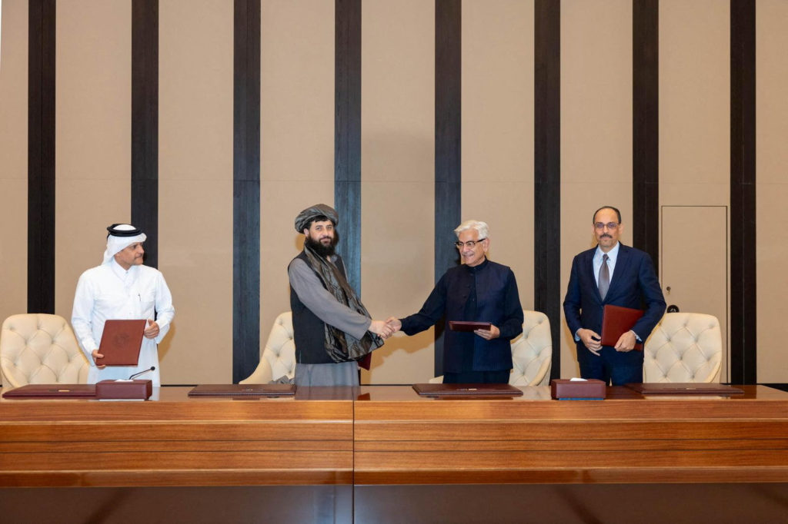
Riazat Butt, Associated Press Riazat Butt, Associated Press
ISLAMABAD (AP) - Afghanistan and Pakistan, embroiled in fighting that has killed dozens of people and injured hundreds, pledged on Sunday to respect a ceasefire.
The truce, mediated by Qatar and Turkey, came into effect immediately and is intended to pause hostilities.
Violence has escalated between the neighbors since earlier this month, with each country saying they were responding to aggression from the other. Afghanistan denies harboring militants who carry out attacks in border areas.
Pakistan is grappling with militancy that has surged since 2021, when the Taliban seized control of Afghanistan and returned to power.
The Taliban government's chief spokesman, Zabihullah Mujahid, gave a positive response to the outcome of the talks that took place in the Qatari capital, Doha, a day earlier. He said both countries had signed a bilateral agreement.
"It has been decided that neither country will undertake any hostile actions against the other, nor will they support groups carrying out attacks against Pakistan. Both sides will refrain from targeting each other's security forces, civilians or critical infrastructure."
A mechanism would be established in the future, "under the mediation of intermediary countries," to review bilateral claims and ensure the effective implementation of this agreement.
Later, during an online news conference, Defense Minister Muhammad Yaqoob told journalists that the Doha talks lasted 13 hours.
Pakistani Defense Minister Khawaja Asif posted confirmation of the deal on X.
"Cross-border terrorism from Afghan territory will cease immediately," Asif wrote. "Both countries will respect each other's sovereignty and territorial integrity. A follow-up meeting between the delegations is scheduled to take place in Istanbul on October 25 to discuss the matters in detail."
Top officials from both countries thanked Qatar and Turkey for their role in facilitating the talks that led to the ceasefire.
The fighting between Afghanistan and Pakistan has severely disrupted people's lives. The two countries share a 2,611-kilometer (1,622-mile) long border known as the Durand Line, which Afghanistan has never recognized. They have just two main trade routes.
Worsening security has forced locals to leave their homes and also left thousands of people and vehicles stranded for a week at border points.
The Chaman crossing in southwest Pakistan is only open for Afghan refugees to leave as part of a nationwide crackdown on foreigners living in Pakistan illegally. Entry from Afghanistan, including trade and pedestrian movement, remains suspended.
Shafiullah Khan, an Afghan refugee trying to leave Pakistan, had been stuck at Chaman for three days.
"We are so happy for this peace agreement," said Khan. "The refugees were suffering a lot, but now, after this agreement, we are happy and are going back to our country."
Less happy was businessman Hazarat Bilal Umaid, whose trade depends on an open border between Afghanistan and Pakistan.
"People were afraid and worried about how to save their livelihoods," he said. "Now our request to both governments is to open the gate for trade as soon as possible."
The Torkham crossing, which straddles Pakistan's northwest and Afghanistan's east, is completely closed.
Associated Press writers Abdul Qahar Afghan in Jalalabad, Afghanistan, Sajjad Tarakzai in Islamabad and Abdul Sattar in Quetta, Pakistan, contributed to this report.
Riazat Butt, Associated Press Riazat Butt, Associated Press
2025-10-19 12:00 EDT
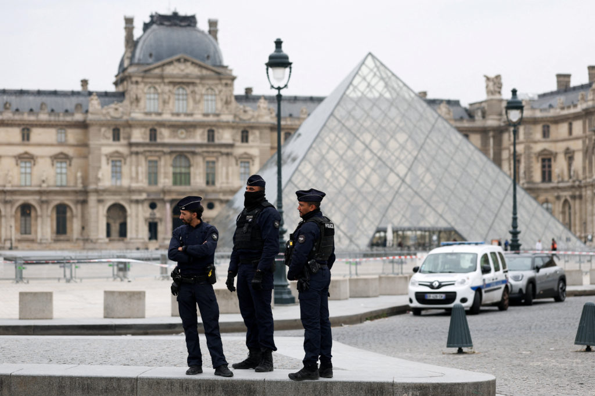
Thomas Adamson, Associated Press Thomas Adamson, Associated Press
PARIS (AP) - In a minutes-long strike Sunday inside the world's most-visited museum, thieves rode a basket lift up the Louvre's facade, forced a window, smashed display cases and fled with priceless Napoleonic jewels, officials said.
The daylight heist about 30 minutes after opening, with visitors already inside, was among the highest-profile museum thefts in living memory and comes as staff complained that crowding and thin staffing are straining security.
The theft unfolded just 250 meters (270 yards) from the Mona Lisa, in what Culture Minister Rachida Dati described as a professional "four-minute operation."
One object was later found outside the museum, Dati said. French media identified it as the emerald-set imperial crown of Napoleon III's wife, Empress Eugénie, containing more than 1,300 diamonds. It was reportedly recovered broken.
Images from the scene showed confused tourists being steered out of the glass pyramid and adjoining courtyards as officers closed nearby streets along the Seine. No one was hurt.
Also visible was a lift braced to the Seine-facing facade near a construction zone, since removed - the thieves' entry point and, observers said, a striking vulnerability for a palace-museum.
Around 9:30 a.m., several intruders forced a window, cut panes with a disc cutter and went straight for the vitrines, officials said. Interior Minister Laurent Nunez said the crew entered from outside using a basket lift.
Their target was the gilded Apollon Gallery - where the royal collection and the Crown Diamonds are displayed, including the Regent, the Sancy and the Hortensia.
A member of a forensic team inspects a window believed to have been used in what the French Interior Ministry said was a robbery at the Louvre during which jewels were stolen, in Paris, France, Oct. 19, 2025. Photo by Gonzalo Fuentes/Reuters
Interior Minister Laurent Nuñez said thieves broke into two display cases and fled on scooters. Among nine pieces reportedly taken were a parure with matching necklace and earrings, a brooch and two crowns - an imperial suite prized for 19th-century craftsmanship and provenance, French media reported.
"It's a major robbery," Nuñez said, noting that security measures at the Louvre had been strengthened in recent years and would be reinforced further as part of the museum's upcoming overhaul plan.
The thieves are believed to have approached via the riverfront facade, where construction is underway, used a freight elevator to reach the hall with a 23-item collection, according to French media.
The Louvre closed for the rest of Sunday for the forensic investigation to begin as police sealed gates, cleared courtyards and shut nearby streets along the Seine.
Daylight robberies during public hours are rare. Pulling one off inside the Louvre - with visitors present - ranks among Europe's most audacious in recent history, and at least since Dresden's Green Vault museum in 2019.
It also collides with a deeper tension the Louvre has struggled to resolve: swelling crowds and stretched staff. The museum delayed opening during a June staff walkout over overcrowding and chronic understaffing. Unions say mass tourism leaves too few eyes on too many rooms and creates pressure points where construction zones, freight routes and visitor flows meet.
Security around marquee works remains tight - the Mona Lisa sits behind bulletproof glass in a climate-controlled case - but Sunday's theft also underscored that protections are not uniformly as robust across the museum's more than 33,000 objects.
The theft is a fresh embarrassment for a museum already under scrutiny.
"How can they ride a lift to a window and take jewels in the middle of the day?" said Magali Cunel, a French teacher from near Lyon. "It's just unbelievable that a museum this famous can have such obvious security gaps."
The Louvre has a long history of thefts and attempted robberies. The most famous came in 1911, when the Mona Lisa vanished from its frame, stolen by Vincenzo Peruggia and recovered two years later in Florence. Another notorious episode came in 1956, when a visitor hurled a stone at her world-famous smile, chipping paint near her left elbow and hastening the move to display the work behind protective glass.
Today the former royal palace holds a roll call of civilization: Leonardo's Mona Lisa; the armless serenity of the Venus de Milo; the Winged Victory of Samothrace, wind-lashed on the Daru staircase; the Code of Hammurabi's carved laws; Delacroix's Liberty Leading the People; Géricault's The Raft of the Medusa. The objects - from Mesopotamia, Egypt and the classical world to Europe's masters - draw a daily tide of up to 30,000 visitors even as investigators now begin to sweep those gilded corridors for clues.
The heist spilled instantly into politics. Far-right leader Jordan Bardella used it to attack President Emmanuel Macron, weakened at home and facing a fractured parliament.
"The Louvre is a global symbol of our culture," Bardella wrote on X. "This robbery, which allowed thieves to steal jewels from the French Crown, is an unbearable humiliation for our country. How far will the decay of the state go?"
The criticism lands as Macron touts a decade-long "Louvre New Renaissance" plan - about €700 million ($760 million) to modernize infrastructure, ease crowding and give the Mona Lisa a dedicated gallery by 2031. For workers on the floor, the relief has felt slower than the pressure.
Forensic teams are examining the site of the crime and adjoining access points while a full inventory is taken, authorities said. Officials have described the haul as of "inestimable" historical value.
Recovery may prove difficult. "It's unlikely these jewels will ever be seen again," said Tobias Kormind, managing director of 77 Diamonds. "Professional crews often break down and re-cut large, recognizable stones to evade detection, effectively erasing their provenance."
Key questions still unanswered are how many people took part in the theft and whether they had inside assistance, authorities said. According to French media, there were four perpetrators: two dressed as construction workers in yellow safety vests on the lift, and two each on a scooter.
Investigators are reviewing CCTV from the Denon wing and the riverfront, inspecting the basket lift used to reach the gallery and interviewing staff who were on site when the museum opened, authorities said.
Associated Press writer Jill Lawless in London contributed to this report.
Thomas Adamson, Associated Press Thomas Adamson, Associated Press
2025-10-19 11:50 EDT
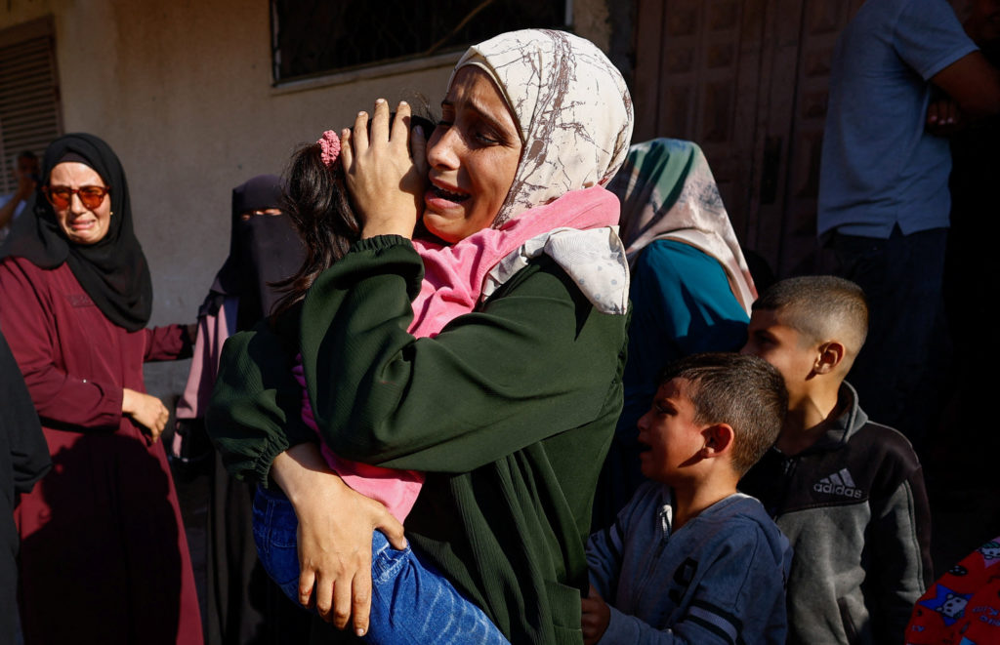
Melanie Lidman, Associated Press Melanie Lidman, Associated Press
Samy Magdy, Associated Press Samy Magdy, Associated Press
TEL AVIV, Israel (AP) - Israel on Sunday struck targets in southern Gaza after saying its troops came under fire from Hamas militants, in the first major test of a U.S.-brokered ceasefire meant to halt more than two years of war. Health officials said at least nine Palestinians were killed.
A senior Egyptian official involved in the ceasefire negotiations said "round-the-clock" contacts were underway to deescalate the situation. The official spoke on condition of anonymity because he wasn't authorized to speak to reporters.
Israeli Prime Minister Benjamin Netanyahu directed the military to take "strong action" against any ceasefire violations but didn't threaten to return to war.
Israel's military said that militants fired at troops in areas of Rafah city that are Israeli-controlled according to agreed-upon ceasefire lines. No injuries were reported. The military said Israel responded with airstrikes and artillery.
Hamas, which continued to accuse Israel of multiple ceasefire violations, said communication with its remaining units in Rafah had been cut off for months and "we are not responsible for any incidents occurring in those areas."
The Palestinian group also said that talks to launch the second phase of ceasefire negotiations have begun.
An Israeli airstrike killed at least six Palestinians in central Gaza, health officials said. It hit a makeshift coffeehouse on the coastal side of Zawaida town, according to Gaza's Health Ministry, part of the Hamas-run government.
Another Israeli strike killed at least two people near the Al-Ahly soccer club in the Nuseirat refugee camp, the ministry said. The strike hit a tent and wounded eight others, said Awda hospital, which received the casualties.
A third strike hit a tent in the Muwasi area of Khan Younis in the south, killing at least one person, according to Nasser Hospital.
An Israeli military official told journalists there had been three incidents Sunday, two in southern Gaza and one in the north, and noted that the update was partial for now.
Israel identified the remains of two hostages released by Hamas overnight.
Netanyahu's office said the bodies belonged to Ronen Engel, a father from Kibbutz Nir Oz, and Sonthaya Oakkharasri, a Thai agricultural worker from Kibbutz Be'eri.
Both were believed to have been killed during the Hamas-led attack on southern Israel on Oct. 7, 2023, which sparked the war. Engel's wife, Karina, and two of his three children were kidnapped and released in a ceasefire in November 2023.
Hamas in the past week has handed over the remains of 12 hostages.
Hamas' armed wing, the Qassam Brigades, said that it had found the body of a hostage and would return it on Sunday "if circumstances in the field" allowed. It warned that any escalation by Israel would hamper search efforts.
Israel on Saturday pressed Hamas to fulfill its ceasefire role of returning the remains of all 28 deceased hostages, saying the Rafah border crossing between Gaza and Egypt would stay closed "until further notice."
Hamas says the war's devastation and Israeli military control of certain areas of Gaza have slowed the handover. Israel believes Hamas has access to more bodies than it has returned.
Israel has released 150 bodies of Palestinians back to Gaza, including 15 on Sunday, according to Gaza's Health Ministry. Israel has neither identified the bodies nor said how they died. The ministry posts photos of bodies on its website to help families attempting to locate loved ones. Some are decomposed and blackened. Some are missing limbs and teeth.
Only 25 bodies have been identified, the Health Ministry said.
After Israel and Hamas exchanged 20 living hostages for more than 1,900 Palestinian prisoners and detainees, the handover of remains is a major issue in the ceasefire's first phase. A major scale-up of humanitarian aid is the other central issue.
Hamas said talks with mediators on starting the ceasefire's second phase have begun. The next stages are expected to focus on disarming Hamas, Israeli withdrawal from additional areas it controls in Gaza, and future governance of the devastated territory.
Hamas spokesman Hazem Kassem said late Saturday that the second phase of negotiations "requires national consensus." He said Hamas has begun discussions to "solidify its positions."
The U.S. plan proposes the establishment of an internationally backed authority to run Gaza.
Kassem reiterated that Hamas won't be part of the ruling authority in a postwar Gaza. He called for the prompt establishment of a body of Palestinian technocrats to run day-to-day affairs.
For now, "government agencies in Gaza continue to perform their duties, as the (power) vacuum is very dangerous," he said.
The Rafah crossing was the only one not controlled by Israel before the war. It has been closed since May 2024, when Israel took control of the Gaza side.
A fully reopened crossing would make it easier for Palestinians to seek medical treatment, travel or visit family in Egypt, home to tens of thousands of Palestinians.
On Sunday, the Palestinian Authority's Interior Ministry in Ramallah announced procedures for Palestinians wishing to leave or enter Gaza through the Rafah crossing. For those who want to leave, Palestinian Embassy staff from Cairo will be at the crossing to issue temporary travel documents for entry into Egypt. Palestinians who wish to enter Gaza will need to apply at the embassy.
The Israel-Hamas war has killed more than 68,000 Palestinians, according to Gaza's Health Ministry, which doesn't distinguish between civilians and combatants in its count. The ministry maintains detailed casualty records that are seen as generally reliable by U.N. agencies and independent experts. Israel has disputed them without providing its own toll.
Thousands more people are missing, according to the Red Cross.
Hamas-led militants killed around 1,200 people, mostly civilians, and abducted 251 people in the attack that sparked the war.
Samy Magdy reported from Cairo.
Melanie Lidman, Associated Press Melanie Lidman, Associated Press
Samy Magdy, Associated Press Samy Magdy, Associated Press
2025-10-18 18:40 EDT
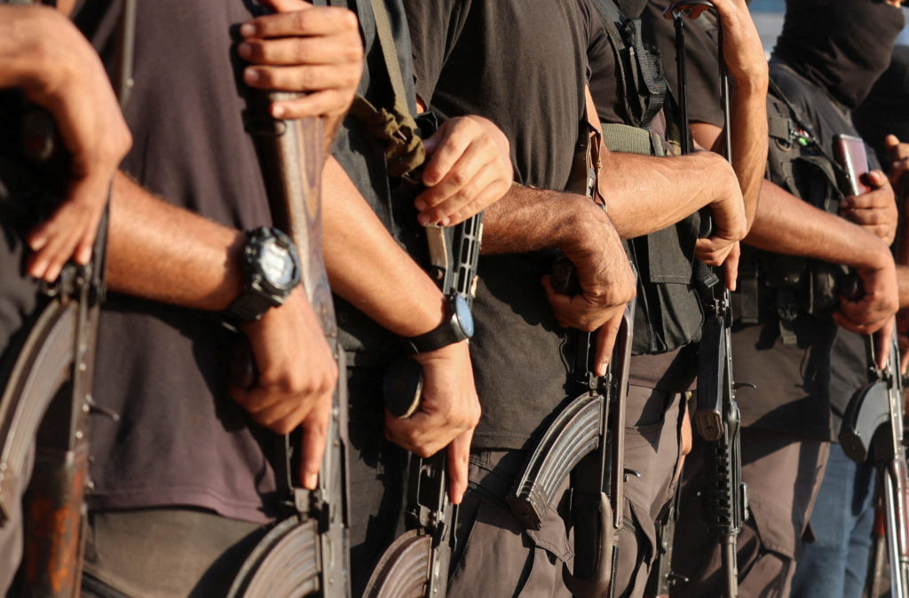
Chris Megerian, Associated Press Chris Megerian, Associated Press
WEST PALM BEACH, Fla. (AP) - The U.S. State Department said Saturday that it has "credible reports" that Hamas could violate the ceasefire with an attack on Palestinian civilians in Gaza.
If the attack takes place, it "would constitute a direct and grave violation" of the agreement forged by President Donald Trump to end the two-year war between Israel and Hamas, the statement said.
No further details were disclosed about the potential attack.
"Should Hamas proceed with this attack, measures will be taken to protect the people of Gaza and preserve the integrity of the ceasefire," the State Department said.
Trump previously warned on social media that "if Hamas continues to kill people in Gaza, which was not the Deal, we will have no choice but to go in and kill them."
The U.S. president later clarified he won't send U.S. troops into Gaza after launching the threat against Hamas.
"It's not going to be us," he told reporters. "We won't have to. There are people very close, very nearby that will go in and they'll do the trick very easily, but under our auspices."
Trump's hostile rhetoric represented a shift after initially expressing nonchalance about Hamas killings, saying they had taken out "a couple of gangs that were very bad."
Chris Megerian, Associated Press Chris Megerian, Associated Press
2025-10-18 17:50 EDT
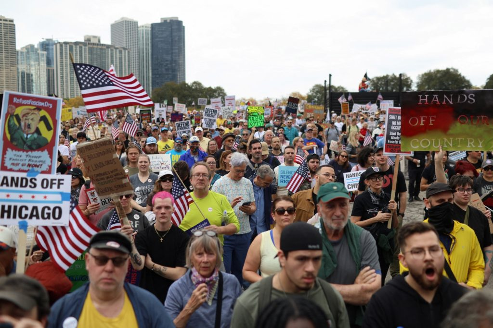
Ali Rogin Ali Rogin
Andrew Corkery Andrew Corkery
Kaisha Young Kaisha Young
Zoie Lambert Zoie Lambert
Laine Immell Laine Immell
Millions turned out across the country Saturday for a coordinated day of protest against Trump and his administration's policies. A similar event in June brought out more than 5 million demonstrators, but organizers say the mobilization was even bigger this time. Ali Rogin speaks with Robert Weissman, co-president of the consumer advocacy group Public Citizen, for more on the protests.
Ali Rogin:
Good evening. I'm Ali Rogin. John Yang is away. Millions turned out across the country today for a coordinated day of protest against President Donald Trump and his administration's policies. Organizers expected more than 2,600 No Kings rallies in big cities and small towns across all 50 states and some European capitals, including Paris, London, Madrid and Berlin.
A similar event in June brought out more than 5 million demonstrators across the country. But this time, organizers the mobilization was even bigger.
Ali Rogin (voice-over):
Today's protests spanned the nation and other parts of the globe. Massive crowds turned out in major cities including New York, Washington, D.C., Boston and Chicago. Demonstrators also gathered in tiny towns like this one in rural Virginia and across the country. They all shared a singular message.
Sen. Chris Murphy (D) Connecticut: Simple words, no kings.
Alison Elliott:
We want to show our support for democracy and for fighting what is right.
Ali Rogin (voice-over):
Protesters named immigration raids and President Donald Trump's deployment of the National Guard to certain cities. Among the reasons they came out.
Man:
He should not be able to conduct these overreaches of his power invading cities.
Jennie Litser-Neves:
As an immigrant here in Germany, it's really important to me that America was founded on immigrants, by immigrants and the fact that they are trying to shut that out and rewrite history is a really big deal.
Ali Rogin (voice-over):
President Trump's allies criticized the rallies as gatherings of extremists. On Friday, House Speaker Mike Johnson said they showed how fringe the political left had become.
Rep. Mike Johnson, Speaker of the House: If you think about what's going to happen here tomorrow, you're going to bring together the Marxists, the socialists, the Antifa advocates, the anarchists and the pro-Hamas wing of the far left Democrat Party, that is the modern Democratic Party. That's where they've gone.
Ali Rogin (voice-over):
But on streets across America, the crowds were energized, what organizers said was a large scale exercise in peaceful protest.
Ali Rogin:
For more now on those protests, we turn to Robert Weissman, co-president of Public Citizen, a consumer advocacy group that is one of the protest organizers. Robert, thank you so much for being here. You just got back from the D.C. rally downtown from your office. How was it?
Robert Weissman, Co-President, Public Citizen:
How was awesome. We had hundreds of thousands of people on the street to protest Donald Trump's authoritarianism. It was passionate, then it was joyful. There was a dance party on the steps of the Labor Department where people inflatable costumes. There were hysterical signs.
But there was a really clear message that we intend to defend our democracy by exercising our democratic rights. We're not capitulating to Donald Trump and his authoritarianism, his effort to scare us into submission.
Ali Rogin:
And as we mentioned, the turnout today was anticipated to be bigger than the no Kings protests that were held in June, with more people attending and more rallies across the country. Why do you think that is?
Robert Weissman:
I think there's two things going on. I think that Trump's authoritarianism is getting worse and mobilizing more people, but I think his effort to intimidate is failing as well. And each time people turn out, each time people protest, each time people stand up, it makes it easier for the next set of people to do that. So we think that today, when all is said and done, it will have been the largest day of protest in American history.
All to defend our democracy, oppose the ICE raids, oppose the National Guard on our streets, oppose the illegal firings of federal employees, opposing the illegal shutdown of agencies. And more people want a government that works for us, not for Donald Trump and his oligarch friends.
Ali Rogin:
You mentioned some of the issues that drove people out today. I'm wondering what you've been hearing from folks participating in the rally in D.C. all over the rest of the country. Are people motivated by individual issues? Are they motivated by the overall approach of this administration, or have you found it to be a combination of factors?
Robert Weissman:
Yeah, I think it's both. I mean, I think people are really worried about the fate of our country and understand that, in total, what Trump is trying to do is take away our democracy and replace it with authoritarian regime.
So some people may be more motivated by the pressure on universities or by the illegal abductions of immigrants or by the deployment of the National Guard, or by the shutdown of the Consumer Financial Protection Bureau that's protecting us from financial fraudsters, or by the weaponization of the Department of Justice.
But everybody understands whatever the thing that gets them going, it's all part of a bigger tapestry of this authoritarian agenda, and they're ready, willing, and passionate about standing up to it.
Ali Rogin:
As you well know, Republicans, other allies of President Trump, have been criticizing these rallies. Speaker Mike Johnson referred to it as a Hate America Day of Protest, and that it's - it was really there to stand against everything that America stands for. And I wonder, what do you make of that criticism?
Robert Weissman:
Well, it was both ridiculous. We had millions of Americans on the street today from all walks of life, in every state, in every congressional district, in Speaker Johnson's district, with 12 different events, all kinds of people. They don't hate America, they love America.
But it was shameful, too, because you may disagree with what the protesters are asking for, but you should be embracing and celebrating our right to protest instead of telling us stay home and be quiet or claiming that we're seeking violence by exercising our First Amendment rights.
Protest is what's driven every significant moment of progress in American history, including our independence. And it's protest now that's going to block this authoritarian agenda of Donald Trump.
Ali Rogin:
And what do you want Americans to take away from today's events?
Robert Weissman:
I think what Trump is trying to do is make people feel scared and isolated and that his agenda is inevitable. And when you see this outpouring of people on the streets, even if you weren't part of it, you should know that you're not alone, that people don't agree with this agenda. And if you didn't join today, join the next one. Find a community organization. There's power in togetherness and in solidarity and love.
And I think that's the way we're going to defeat authoritarianism. That's what the best of what America is, when we come together unified. And I think that's what we display today and people who weren't part of it. Join us the next time.
Ali Rogin:
Robert Weissman with Public Citizen. Thank you so much.
Robert Weissman:
Thank you.
Watch the Full Episode
Ali Rogin Ali Rogin
Ali Rogin is a correspondent for the PBS News Hour and PBS News Weekend, reporting on a number of topics including foreign affairs, health care and arts and culture. She received a Peabody Award in 2021 for her work on News Hour's series on the COVID-19 pandemic's effect worldwide. Rogin is also the recipient of two Edward R. Murrow Awards from the Radio Television Digital News Association and has been a part of several teams nominated for an Emmy, including for her work covering the fall of ISIS in 2020, the Las Vegas mass shooting in 2017, the inauguration of President Barack Obama in 2014, and the 2010 midterm elections.
Andrew Corkery Andrew Corkery
Andrew Corkery is a national affairs producer at PBS News Weekend.
Kaisha Young Kaisha Young
Kaisha Young is a general assignment producer at PBS News Weekend.
Zoie Lambert Zoie Lambert
Zoie Lambert is a production assistant for PBS News Weekend.
Laine Immell Laine Immell
2025-10-18 17:45 EDT
PBS News Weekend PBS News Weekend
In our news wrap Saturday, Hamas blamed its slow progress in returning hostage remains on lack of machinery to dig through rubble in Gaza, Trump says two survivors detained after a U.S. strike on a vessel in the Caribbean will be returned to their home countries, former Rep. Santos is out of prison after Trump commuted his sentence, and the Los Angeles Dodgers are headed back to the World Series.
Ali Rogin:
In tonight's other headlines, there is uncertainty whether Palestinians trying to get back to Gaza will have a way through the Rafah border crossing. The Palestinian Embassy in Egypt said the crossing will reopen Monday. But Israeli Prime Minister Benjamin Netanyahu's office issued its own statement today that saying the crossing will remain closed until further notice.
Before the war, the Rafah crossing, which connects the Gaza Strip to Egypt, was the only way for Palestinians to leave the area along a route not controlled by Israel. Israel said all the bodies of the hostages must be returned before the crossing can be allowed to reopen.
Late this evening, the IDF said it would soon receive the remains of several hostages. Hamas blames its slow progress in returning remains on a lack of heavy machinery to dig through the rubble and ash of what's left of the Gaza Strip.
Meanwhile, Gaza Civil Defense blamed the Israeli military for the deaths of nearly a dozen people overnight. It's been widely reported that 11 people from the same family were killed after their bus was hit by a tank shell. The IDF said its soldiers fired at a suspicious vehicle that crossed into an area where Israeli forces continue to operate. This is the deadliest incident since the ceasefire took effect eight days ago.
President Trump said tonight two survivors who were detained after a U.S. strike on a vessel Thursday in the Caribbean will be returned to their home countries.
In a social media post, the president said the military targeted an alleged drug carrying submarine because it was going to bring fentanyl and other narcotics to the US. Two people on board were killed while two survivors were rescued. According to Mr. Trump, they will soon be sent to Ecuador and Colombia, where they will face detention and prosecution. Thursday's strike is at least the sixth such attack since early September.
Former Congressman George Santos is out of prison and back home tonight after President Trump commuted his sentence. The president wrote on social media that he decided to sign the commutation to release Santos from prison on Friday, in part because Santos would always vote Republican when he was in office.
Santos, a Republican who represented New York's 3rd congressional district, was set to serve seven years in federal prison after he pled guilty in August to fraud and identity theft charges.
And baseball superstar Shohei Ohtani cemented the Los Angeles Dodgers spot in the World Series thanks to his hitting and pitching talents. Ohtani hit three home runs, had 10 strikeouts and pitched six shutout innings to lead his team to a 5-1 victory over the Milwaukee Brewers late Friday. The Dodgers will soon try to earn their third World Series ring since 2020.
Watch the Full Episode
PBS News Weekend PBS News Weekend
2025-10-18 17:40 EDT
Ali Rogin Ali Rogin
Andrew Corkery Andrew Corkery
For years, China's government has used what's known as the "Great Firewall" to censor the internet inside its country and block access to select foreign websites. Now, a document leak shows that a little-known Chinese company is exporting these tools to other countries, including Myanmar, Pakistan, Kazakhstan and Ethiopia. Ali Rogin speaks with WIRED senior writer Zeyi Yang to learn more.
Ali Rogin:
It's known as the Great Firewall, and it's what the Chinese government uses to censor the internet inside its country and block access to select foreign websites. Now a leak of tens of thousands of documents shows that a little known Chinese company with ties to that firewall is exporting those tools to other countries in Africa and Asia, including Myanmar, Pakistan, Kazakhstan and Ethiopia.
Recently, I spoke with Zeyi Yang, a senior writer at Wired who has been following the story. Zeyi Yang, thank you so much for joining us. First of all, what do we know about the release of these documents itself? What does it tell us?
Zeyi Yang, Senior Writer, WIRED:
So this is a trove of over 100,000 documents that came from anonymous leak. And collectively we see that this documents coming from a Chinese company, Geedge Network, shows that they have very advanced capability to monitor the internet traffic that goes into a whole country and that they're trying to sell and have succeeded in selling this technology to some foreign governments.
Ali Rogin:
And this technology we believe, also undergirds the great firewall itself. So let's take a step back and talk about how that firewall itself works.
Zeyi Yang:
Anyone of the 1.4 billion people in China right now, if they are trying to access internet through their laptops, through their mobile phone, they will have to go through this filtering system that decides what information they can get. And they cannot. It means that blocking certain websites that you cannot see, it means filtering all the results that you get on search engines.
So it's really a very big infrastructure that makes sure people can only see the content that the government deems acceptable to be seen.
Ali Rogin:
And this trove of documents reveals the extent to which this company Geedge is part of this infrastructure. But of course there's also information about the way in which it's selling this technology to other countries. So what do we know specifically about that part of their endeavor?
Zeyi Yang:
What we know so far is that Geedge is a company that mostly operates like any other commercial cybersecurity company. It has hardware and software products that it sells to foreign governments and it helps them makes a very user friendly software to monitor the traffic coming into their country.
Ali Rogin:
And what does this company say in response to criticism that it's engaging in this with other authoritarian countries?
Zeyi Yang:
I don't think a company has responded to what we found this time. But over the years this company has been mostly low profile. It hasn't really been the company that people talk about when they talk about Chinese square firewall. But we are seeing that they actually have quite advanced capabilities and I'm sure we'll see them in news headlines a lot more in the future.
Ali Rogin:
And can you tell us about the connections that one of Geedge shareholders has to the creation of the Great Firewall?
Zeyi Yang:
One thing we found is that back in 2019, the second year that Gage was founded, Fang Bingxin, which is a scientist in China, was actually one of the investors in the companies. And this is the guy who also created the very first prototype of Chinese grid firewall and was credited as the father of China's Great Firewall. And this might be one of his attempts to commercialize that kind of technology and sell it to foreign governments.
Ali Rogin:
Much of this is very opaque. But what do we know about the strategy here of reaching out to particular countries? Is China and or Geedge specifically courting other countries with records of human rights abuses?
Zeyi Yang:
Well, what we do know is that they are targeting companies who already have a will in censorship. For example, before Geedge comes in, the Pakistani government actually has worked with other companies from the Western hemisphere to build their own internet censorship system. But then those companies are sanctioned and they have to withdraw from those local business in Pakistan. And that's when Geedge find an opportunity to come in.
They basically marketed the technology to repurpose the hardware that Pakistan government already have and use them to build this more comprehensive, more updated censorships infrastructure. And what we see is that the Pakistani government has agreed to do that.
Ali Rogin:
And there is some data linking specific countries to using the technology already. But what do we know about other countries that might also be seeking it?
Zeyi Yang:
One thing we found this time is that Geedge Networks has been recruiting more engineers to maintain its infrastructure overseas. And in one specific recording post, they specifically named five countries that engineers might have to be troubled to. And those are Pakistan, Bahrain, India, Malaysia and Algeria.
But we also know that Geedge has been hiring translator who can speak Spanish and French. So it's fair to say they are probably going to target a lot more countries out there.
Ali Rogin:
The documents also show that Geedge is providing services within China to certain provincial governments, including in Xinjiang, where the government is accused of committing human rights abuses against the Uyghur Muslim minority. What do we know about that part of the project?
Zeyi Yang:
I think this is one of the more surprising findings from this leak. We're seeing that the experience of building a commercialized product of censorship is also helpful within China. It's also attractive to provincial government within China.
For example, in Xinjiang there will be counterterrorism. That will be how to deal with the ethnic minorities within this province. But also in some other provinces in China, it could be detecting and combating financial scams.
Ali Rogin:
What does this tell us about the way that Chinese corporations work on behalf of the Chinese government's aims?
Zeyi Yang:
I think this really demystifies a lot of the ideas about the Great Firewall because it seems it's so capable, it has to be built by the government. But in fact, a lot of the things in there can come back to commercialized operations.
Ali Rogin:
Is there anything we can deduce about China's end game here in terms of its geopolitical strategy?
Zeyi Yang:
I think China very much like other countries to adopt a kind of Internet management system that's similar to China's, because one thing we're seeing right now is that countries are taking sides when it comes to how will Internet look like in the next decade.
And China, with its Belt and Road Initiative and with its other big foreign investment projects are trying to get more countries to be on its side. And what Geedge offers, I think is one of the things that other government actually are interested in because a lot of governments want to have more control over what their citizens are seeing. And so this is part of the offer that China can provide to other countries to join their side.
Ali Rogin:
So interesting. Zeyi Yang with WIRED. Thank you so much for joining us.
Zeyi Yang:
Thank you, Ali.
Watch the Full Episode
Ali Rogin Ali Rogin
Ali Rogin is a correspondent for the PBS News Hour and PBS News Weekend, reporting on a number of topics including foreign affairs, health care and arts and culture. She received a Peabody Award in 2021 for her work on News Hour's series on the COVID-19 pandemic's effect worldwide. Rogin is also the recipient of two Edward R. Murrow Awards from the Radio Television Digital News Association and has been a part of several teams nominated for an Emmy, including for her work covering the fall of ISIS in 2020, the Las Vegas mass shooting in 2017, the inauguration of President Barack Obama in 2014, and the 2010 midterm elections.
Andrew Corkery Andrew Corkery
Andrew Corkery is a national affairs producer at PBS News Weekend.
2025-10-18 17:35 EDT
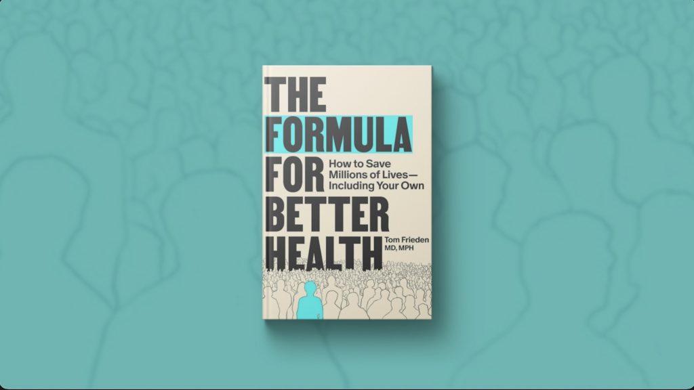
Ali Rogin Ali Rogin
Claire Mufson Claire Mufson
Dr. Tom Frieden has spent his career as a disease detective, New York City's health commissioner during a tuberculosis outbreak and CDC director during the Ebola crisis. In his new book, "The Formula for Better Health," he shares lessons about how to close the gap between awareness of health challenges and the actions needed to solve them. Ali Rogin speaks with Frieden for more.
Ali Rogin:
It isn't hard to find advice for how to live a healthier life. It's working that guidance into your daily routine that can be the most difficult part. Turning those suggestions for better health into effective policy is the challenge public health professionals grapple with every day.
And right now, officials who work on these issues are under even more pressure than usual. Just this past weekend, the White house fired about 1,300 staffers at the Centers for Disease Control before rehiring half of them. Former CDC director Dr. Tom Frieden's new book, "The Formula for Better Health," takes on these challenges. In it, he shares lessons from his own public health career about how to close the gap between awareness of health challenges and the actions needed to solve them.
Dr. Frieden, thank you so much for joining us. This book spans your experiences over your entire career, which you spent as a disease detective, as New York City health commissioner during a massive tuberculosis outbreak. You were CDC director during the Ebola crisis. And then you also witnessed the COVID pandemic.
As a former CDC director, why was it important to you to write this book at this time?
Dr. Tom Frieden, Author, "The Formula for Better Health": I began writing this book a decade ago in the world's first Ebola epidemic, when West Africa was struggling with health systems in free fall. And it became really clear that people don't understand what public health is, why it is so important. It might make the difference between their life and their death. And for people in public health, there's a lot to learn about how to do it successfully.
Ali Rogin:
You talk about the importance of public health. Not just that, but also the ways in which it complements individual choices that people make to keep their health up. You write, quote, promoting changes individual behavior is not the core of public health. It's a symptom of public health failure. When public health succeeds, societal changes make the individual's default choices healthy. I thought that really summed it up really well.
So why is it that public health is a really important complement to those individual choices? Why is it such a key part of the formula?
Tom Frieden:
It's not a question of, is it individual responsibility or societal responsibility? It's both. Society has a responsibility to structure things so that if you just go with the flow and go about your business, you won't end up sick or disabled or dying young.
At the same time, it doesn't take any of us off the hook. There are things that we can do as individuals. Nobody's going to slap sunblock on you or move your legs to exercise. There are certain things that you need to do yourself. But we as a society, we collectively as a community, can do things that I outline in this book that will allow each of us to live longer, healthier lives. They will help our businesses be more productive, our economy better, and as a country, to be healthier.
Ali Rogin:
You also write about how public health falls victim to what you call the Cassandra Curse, named for the prophet of Greek mythology who was able to see future tragedies, but cursed so that nobody would believe her. Give us an example of the Cassandra Curse and how do we break free from it?
Tom Frieden:
Fundamentally, the Cassandra Curse is about our inability to take actions in our own best interest. And what drives it. What became clear, as I did the research for this book, what drives it is that our perceptions of ourselves, of our world and of the future, are not accurate. There are inaccuracies there that make us vulnerable to getting harmed or killed.
One of them is something called hyperbolic discounting that we shortchange the future. If smokers knew that they had a 50-50 chance of dropping dead after their next cigarette, very few people would smoke. And yet the likelihood of dying from tobacco use is 50 percent, unless people quit.
One thing that we can do is we can imagine those distant consequences as happening tomorrow, or we can reward ourselves with things that are good in the short term and also good in the long term. There are ways to break the Cassandra Curse, but if we don't do that, we may be condemned to tragic illnesses and deaths that could have been prevented.
Ali Rogin:
And the framework for breaking that curse that you lay out, you call it that See, Believe, create, formula. How does that work?
Tom Frieden:
The formula for better health is a formula that has already saved millions of lives. It can save millions more, and it may save your own. It is see, believe, create, see the invisible. See things that are affecting your health or driving things in society or blocking your from acting or whether or not you're succeeding. See that clearly to understand your health.
Believe that you can make a difference. Because sometimes we think things are inevitable when they're not. And then the hardest part, create a healthier future through rigorous, simple, clear, systematic action that overcomes the barriers that will otherwise undermine our health, our children's health, our community's health.
Ali Rogin:
The HHS is in a period of tremendous upheaval. Many of the programs that you champion in this book that are critical to this formula, such as surveillance of communities over the long term, global health efforts, have been affected and many of them cut. What concerns you most about this moment we're in terms of public health?
Tom Frieden:
What we're seeing is very aggressive destruction of our public health protections. And you see sometimes some of the things put back, disease detectives put back, or people who are working on Ebola outbreaks put back, or the National Center for Health Statistics, some of those individuals restored.
What worries me is that think of public health as a house. You know, if the window or the door or the roof falls off, you fix it. But if the basics, if the foundations are being undermined, we are less safe and we as a country will be sicker. We will have higher health care costs and we will have tragic illnesses that could have been prevented.
Ali Rogin:
The tone of this book is still very optimistic despite some of the challenges. What gives you optimism right now?
Tom Frieden:
I am optimistic. Facts are stubborn things and even if they are ignored and suppressed, they're still facts. And everyone wants to live a longer, healthier life. And there are many things that we can agree on. We should have healthier food. Everyone should have a primary care clinician who supports their health. Our health care system should do much more for our health and we should get conflicts of interest out of the decision making process.
Ali Rogin:
The book is "The Formula for Better Health." Dr. Tom Frieden, thank you so much for joining us.
Tom Frieden:
Thank you.
Watch the Full Episode
Ali Rogin Ali Rogin
Ali Rogin is a correspondent for the PBS News Hour and PBS News Weekend, reporting on a number of topics including foreign affairs, health care and arts and culture. She received a Peabody Award in 2021 for her work on News Hour's series on the COVID-19 pandemic's effect worldwide. Rogin is also the recipient of two Edward R. Murrow Awards from the Radio Television Digital News Association and has been a part of several teams nominated for an Emmy, including for her work covering the fall of ISIS in 2020, the Las Vegas mass shooting in 2017, the inauguration of President Barack Obama in 2014, and the 2010 midterm elections.
Claire Mufson Claire Mufson
Claire Mufson is a journalist and general assignment producer at PBS News Weekend. She produces stories on a wide range of topics including breaking news, health care, culture, disability and the environment. Before joining PBS News, she worked in Paris for French public broadcasting channel France 24 and for The New York Times.